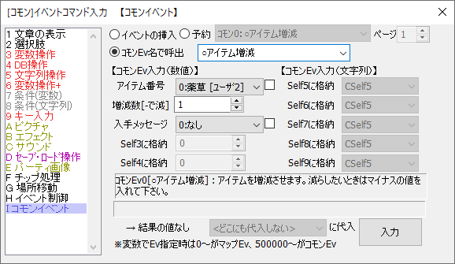

イベントコマンド 【コモンイベント】
コモンイベントの呼び出し、またはラベル処理を行います。

【各機能の説明】
[イベントの挿入]
コモンイベントや、同マップの他のイベントを実行します。
コモンイベント側で入力を受け付けられるように設定されていた場合は、ここで入力を指定します。（上記画像中の「アイテム数」や「増減数[-で減]」
が入力です。これらは、コモンイベントの設定の★.「設定」による特殊入力設定で設定されたものです）
変数で呼び出し先を指定する際は、0～はマップイベント、500000～はコモンイベントをそれぞれ呼び出します。
※入力1の値がそのコモンEvのSelf変数0に代入、入力2の値がコモンSelf変数1に代入……といった具合にコモンイベントの初期値が格納されます。文字列入力の場合は、入力1がSelf変数5に、入力2がSelf変数6に……という風に格納されます。
[ページ]
「呼び出したマップイベント」、あるいは変数で「マップイベント」を呼ぶ際に、「マップイベントの呼び出しページ」を指定します。
変数も指定可能です（1100000～:マップセルフ変数 や 1600000～:コモンセルフ変数など）。
【特殊機能】
マップイベントを呼び出す場合、「0ページ」を指定すると「起動中のページ」が呼び出されます。
（※初心者への誤解を避けるため、スピンボタンからではページ数を「1」未満にはできないようになっています、入力の際はページ数に直接「0」を打ち込んでください）。
イベントが存在しない場合は無視されます。
[予約]
現在のイベントの処理が全て終わった後、指定したイベントの処理を続けて実行します。
[ｺﾓﾝEv名で呼出]
コモンイベントを名前で呼び出します。同一名称のコモンイベントが存在する場合、番号の大きい方が呼び出されます。
この入力欄に数値変数\cself[0]や文字列変数\s[1]を加えて指定することもできます（ただしコモンEv名が正しくない場合は何も起きません）。
保存したコモンイベント(.common)のアドレスを指定して呼び出すこともできます。
※ただし「複数保存」したコモンイベントの場合は、実行されるのは一番先頭のものとなります。
入力も指定可能ですが、セルフ0～3、5～8全てに指定が必要です。
→ commonファイル呼び出し機能は2.00でサポート対象外となりました。
[結果の値]
もしコモンイベントに「結果を返す？」が設定されていた場合、その戻り値が格納される変数をここで指定することができます。どこにも代入しないようにすることも可能です。
【裏技】
『Ctrlキーを押しながらプルダウンメニューを選ぶ』と、『入力値』を維持したまま『コモンイベント』だけを変更できます。
もっぱら、「コモンイベントの番号を変更した場合などに、入力値をそのままにしてコモンイベント番号だけ切り替えたい」ときに使えるでしょう。